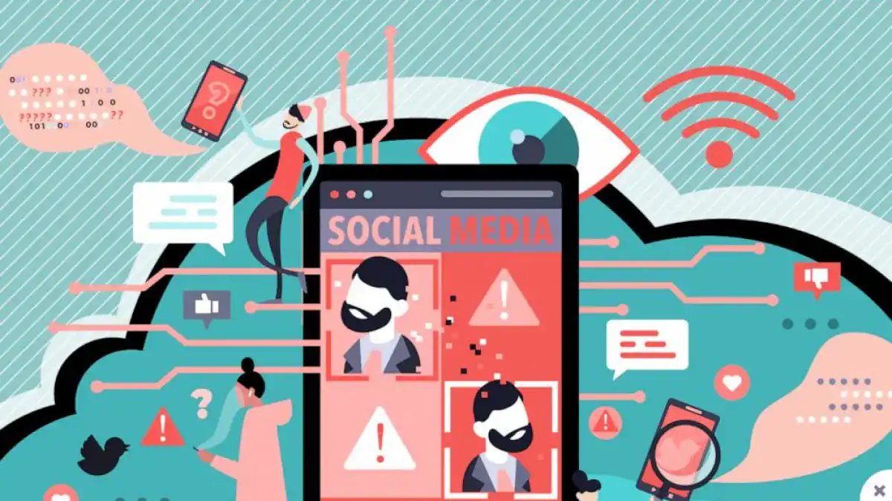
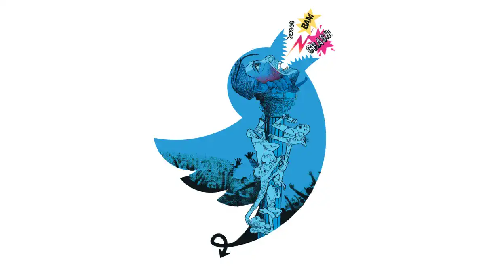
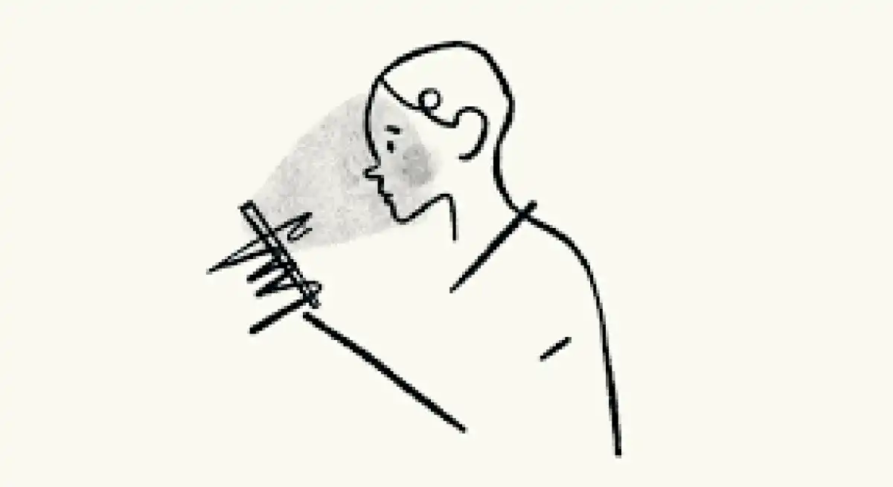

SOCIAL NETWORK'S IMPACT
Ambient anxiety
The world is in bad shape, and social networks are constantly reminding us of this. We are constantly exposed to the latest news, and they are often the most alarming. Some good news appear here and there, but we can't say it's the majority.
Confronted with this flow of negative information, young people can feel powerless, even deeply anxious.
Excess of Manicheanism
Furthermore, social networks push to ideological rigidification. I am thinking in particular of Twitter, where everyone is divided, convinced by their own opinion. Even within the communities that are formed there, everything is black or white and people do not hesitate to "cancel" someone if they have a different opinion.
There is a cruel lack of listening and perspective. The exchanges resemble more virtual fights punctuated by insults than real debates.
The cult of perfection
Another aspect, which can be found more on networks like Instagram or TikTok, is the importance of image. This affects mainly young women, because of the beauty standards that are even more accentuated for them.
On these networks, we see all day long photos of perfect physiques, of dreamed
lives. The constant staging makes us
believe that each one has an even more fulfilling life than the other, is in an incredible place, has
the most beautiful
clothes, a perfect hair and makeup...
Everything is thought (and filtered, retouched) to look real and effortless when reality is often
definitely different.
This constantly brings us back to our own image, the one we send to others. And a normal life absolutely does not look like this. Often, our self-confidence can be affected because we will never have this ideal physique or life, no matter how hard we try. This can also have a strong impact on our mental health, because of the comparison.
All these pictures that make us dream end up tarnishing the esteem we have for ourselves and for our life. In the end, it is only a distorted mirror of reality, the life of others is totally idealized to the detriment of our own.
Towards an evolution?
That said, some movements like body
positiveare slowly showing the other side of all those perfect pictures posted by influencers
and celebrities.
And in the same line, we are encouraged to love our bodies and by extension, the person we are.
Self-acceptance and appreciation are the
keys to a better experience on Instagram, TikTok and even in real life.